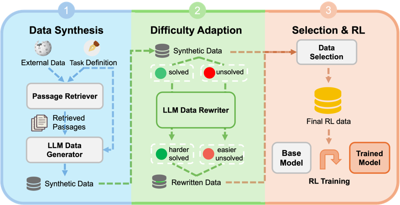

Synthetic Data RL
Task definition is all you need
Codex design study / zguo0525.github.io
The site needs one authored identity, stronger composition, and real research imagery that remains legible. This proposal keeps the seal and display masthead, then corrects the parts that turned the first concept into a motif instead of a system.
01 / Working proof
The after-state is live HTML using the actual portrait, writing, and publication figures. Switch viewport and theme to test the idea rather than trusting a static hero render.
02 / Design moves
Scale and authorship create the impact. Decorative effects stay subordinate to information and credibility.
The name becomes the first visual signal. A concise research kicker stays on one deliberate line, while the portrait aligns to the same block.
The full mark appears in the masthead and essay colophon. It does not repeat through every component or compete with article titles.
One current essay receives prominence before research. Selected Research still arrives before the complete writing list.
Actual paper figures keep their original colors. Neutral mats, consistent containment, and metadata unify the cards without altering evidence.
The large masthead belongs to the homepage. News, Essays, and Papers receive a smaller identity bar so repeated navigation stays efficient.
Keep one entrance transition and the reading bar. No parallax, scroll interception, looping ornament, or duplicate page fades.
03 / Identity system
The prototype proves placement and scale. The final mark should be custom drawn or reviewed by someone fluent in Chinese seal design before it becomes permanent branding.
Full signature
Two-character vertical mark. Sharp geometry, visible internal border, and enough size for the characters to remain intentional.
Small-size derivative
A single-character derivative is more legible at 16-32 pixels. Social cards can use the full signature only when it does not reduce title space.
04 / Redlines
The original concept was directionally right. These corrections keep it from becoming visually louder but professionally weaker.
05 / Build sequence
The redesign should land as a coherent change, but each surface gets its own screenshot checkpoint before commit.
| Step | Work | Primary files |
|---|---|---|
| 01 | Build the responsive homepage masthead and compact inner-page shell. | _layouts/default.html, assets/css/style.css |
| 02 | Add the featured essay row and reorder the supporting homepage sections. | index.md |
| 03 | Normalize paper image mats and crops without filters. | index.md, assets/css/style.css |
| 04 | Add the seal include, essay colophon, favicon derivative, and optional OG mark. | _includes/, _layouts/, scripts/gen_og_cards.py |
| 05 | Verify light/dark, desktop/mobile, reduced motion, wrapping, and favicon sizes. | generated screenshots and pixel checks |